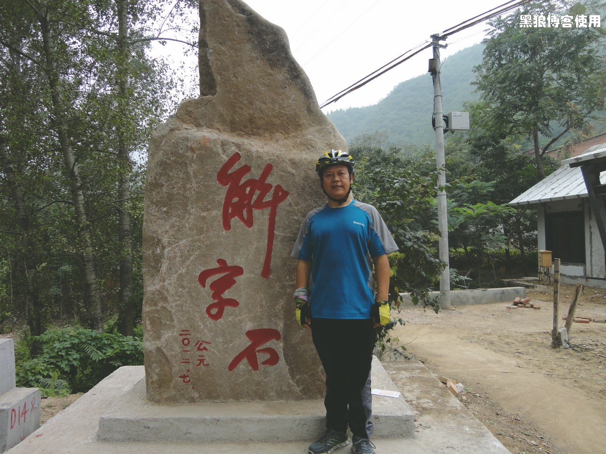

黑狼语录：
- 第一次体会到走下坡路不是爽，而是后悔的感觉。
和群里的车友约好周六十三陵、解字石，只要早上不下雨，就成行。
早 7 点 30 天气还不错，从家里出发，到阜成门和车友常爷、袋鼠会和，结果还是晚了几分钟，最后在西直门北大街会和。
今天百分百有雨，但还是没有带任何雨具。因为如果下了雨，穿上雨衣也是浑身汗水湿透，带与不带效果不大。
还有几个人约好是在辛庄桥集合，还有 24 公里左右吧，常爷前面带路，结果速度越来越快，后来居然都达到了 30 公里时速，到了集合地点，我已经有些累了。
9点钟，到了辛庄桥集合地点，稍作休息，前往十三陵，今天总共 6 个人。蚊子带队，速度控制的不错，25 公里左右，正合适。
10点半左右到了十三陵，稍作调整，继续出发。
从十三陵开始，就有上坡。都是第一次走这条路，也不知道是不是已经开始解字石的爬坡了。很累的时候，问了几次常爷，他说还没开始爬坡呢。到了离终点解字石还有 8 公里的时候，常爷居然还在说没有正式爬坡呢。
之后的路，每隔 1.6-1.8 公里，休息一次，每次都是气喘如牛，每次都是我断后。
距离终点还有 2 公里的时候，我确认早已经开始爬坡了。大家最后一次休息，喘，大喘 ~~。
出发后几十米，就居然有个下坡，很爽，然后居然是大下坡，但已经没有爽的感觉，居然有种越走越后悔的感觉。很快到了解字石，最后 2 公里竟然都是下坡，后悔呀，待会儿回去的时候又增加了 2 公里上坡路。
到了解字石，雨也开始下了起来。
跑了 74 公里。

合影是 5 个人，期中一个车友不堪上坡路的折磨，在距离解字石 10 公里处等我们一起返程。
返程的下坡路，不是一般的爽，是非常的爽。如果没有下雨，如果没有泥水，如果没有冷风，那就只能用完美来形容了，最适合疲惫的我了。
衣服湿了几遍，泥水溅了满身，终于是晚 7 点左右到了家。
今天总共跑了 146 公里。胜利完成任务。